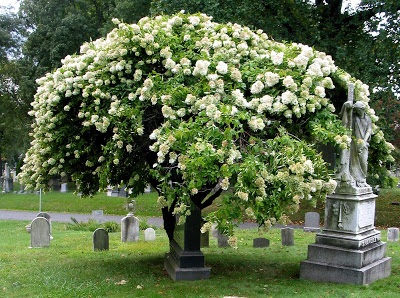
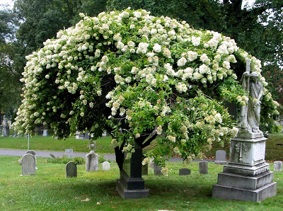

Many who live in South Slope take Green-Wood Cemetery for granted. But while Green-Wood is still an active cemetery, it has become something of a tourist attraction due to the rich history, lively events programming, and beautiful vistas at Brooklyn’s largest cemetery.
But did you know that Green-Wood Cemetery is also an ecological hot spot? Green-Wood is roughly the same size as Prospect Park, and crowded with about 8,000 large healthy trees and several bodies of fresh water. This combination, with relative quiet and isolation, has allowed for Green-Wood Cemetery to become one of the most diverse ecological zones in Brooklyn, even having a few features absent at Prospect Park!
The next time you’re looking for a nature-break, come to Green-Wood to enjoy the wildlife — and be sure to pick up a free highly detailed color map at the Cemetery entrance.
Green-Wood Cemetery Awarded Arboretum Status
Green-Wood Cemetery's 478 acres with the aforementioned 8,000 trees was recently awarded arboretum status — along with many flowers, shrubs, and aquatic plant life. While Hurricane Sandy did cause some damage to about 300 trees, you’d never realize it strolling along the nearly car-width trees that surround you. Green-Wood’s trees are particularly large and well leafed due to prime conditions, and being away from hordes of people and dogs. An expert from the Brooklyn Botanic Garden, after touring the grounds recently, said that Green-Wood has the BEST collection of mature trees in New York City. This includes two of the oldest trees in New York City: a Sassafras and a Camperdown Elm.
Amazing Sassafras
Benjy has concluded that Green-Wood has the oldest Sassafras in New York City. The Sassafras may date from before Green-Wood was established in 1838. It appears as two trees within a few feet of each other–possibly survivors of what may once have been a larger colony.
Sassafras trees are rather small saplings that grow along highways and turn a bright red in the fall. And, if you’ve ever been up-close-and-personal with a Sassafras, you likely know that it smells like root beer. Indeed, Sassafras was used to give root beer its flavor.
The Team
The Green-Wood staff of 37 seasonal workers lovingly care for the huge, old trees at Green-Wood. For example, the team inoculates some of the infected beech trees (infected with Phytophthora sp., which causes bleeding cankers) with phosphate once a year to arrest their bleeding canker plugs.
Chestnut Hill's pre-blight chestnut trees are a true gift because the trees are a blight-resistant breed of Chestnut tree. In addition to the Chestnuts, there are Beech, London planetree, Camperdown Elm, English Hawthorn, Sourwood 60-70 year-old “senior-citizen” Kousa Dogwood. There are also Chinese Fringe Trees, Turkey Oak, and Linden, whose lifespan is measured in centuries.
The Franklinia Alatamaha
Green-Wood also features one of the most curious trees: the Franklinia alatamaha. This tree is extinct in the wild since the early 19th century. It has large white flowers similar to Camellia blossoms. The rare Franklinia marks the Green-Wood grave of the father of the painter of Whistler’s Mother.